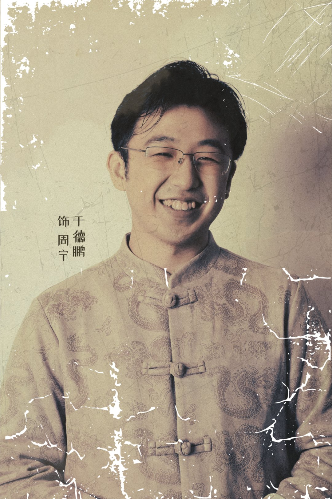
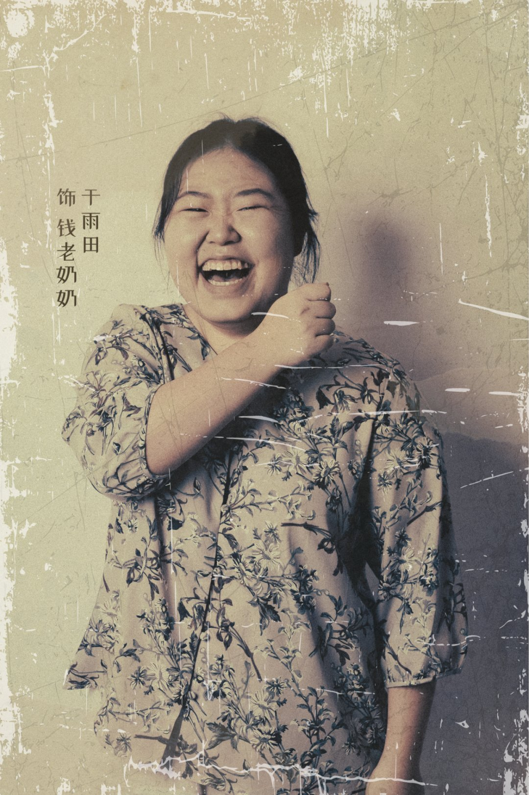
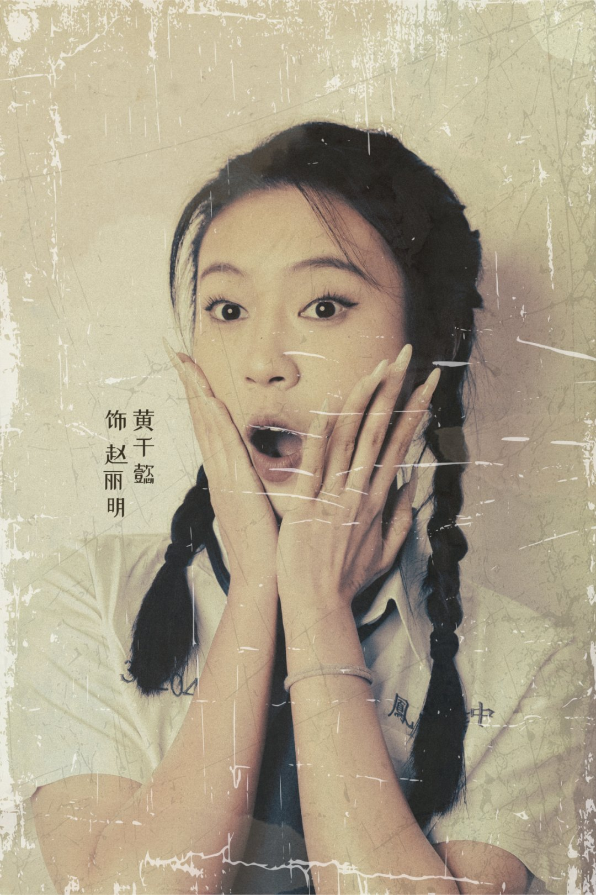
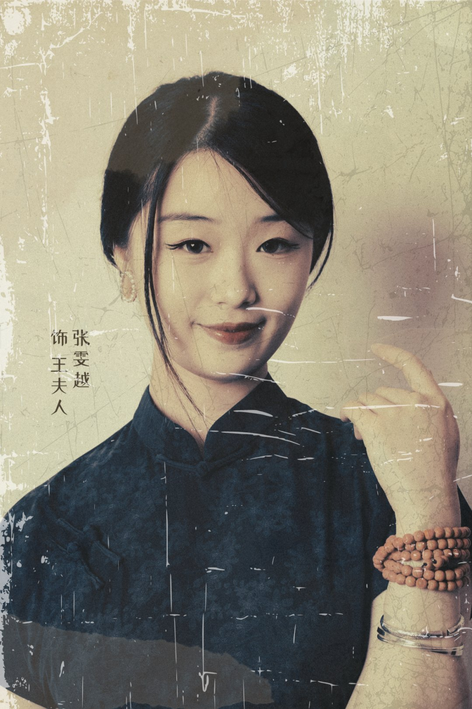
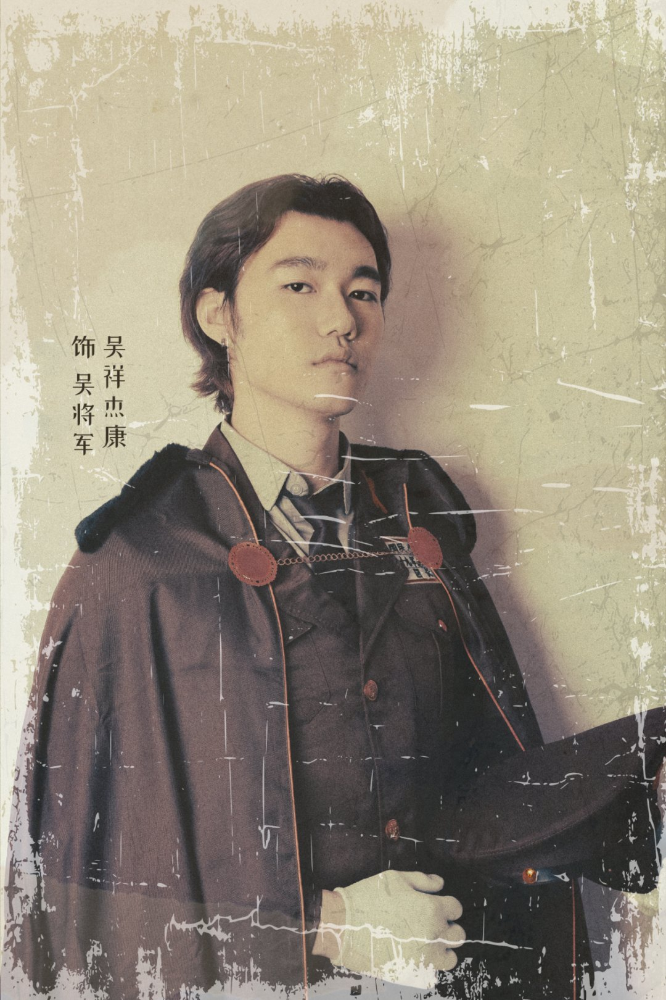
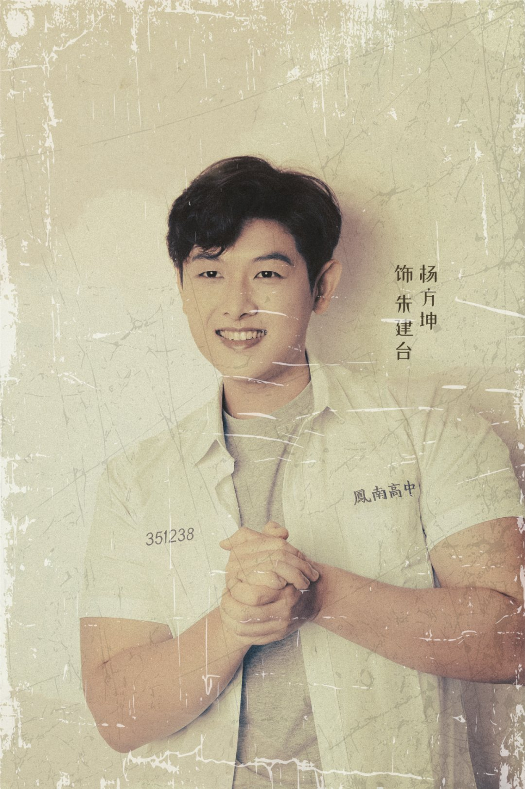
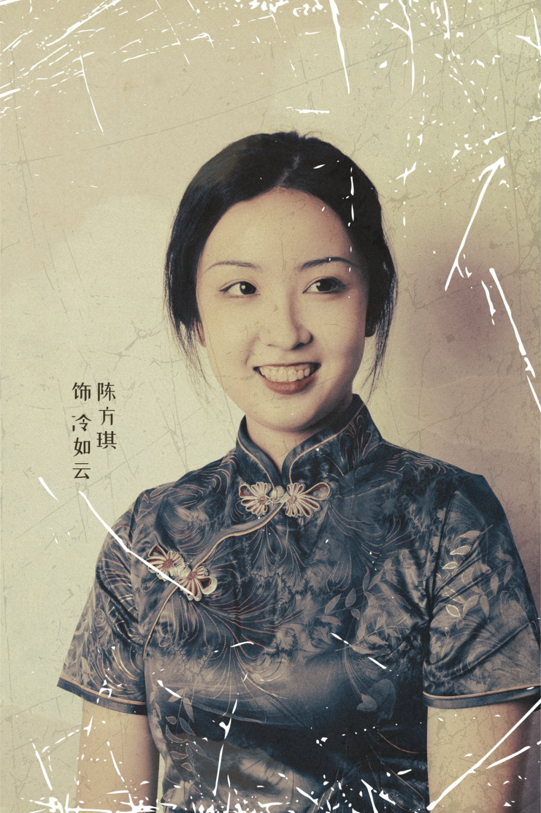
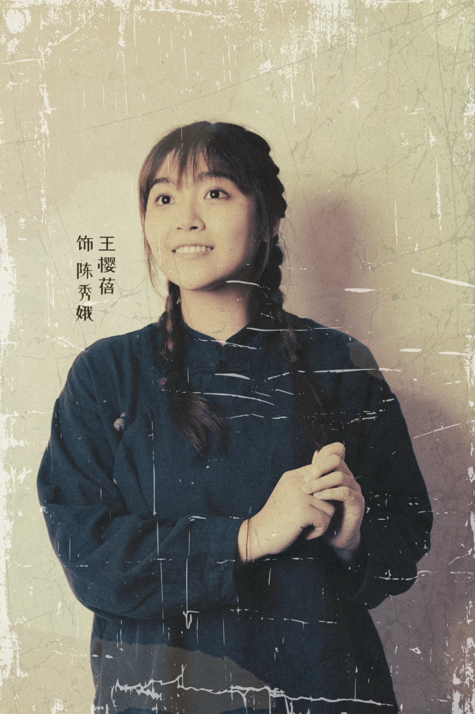

Technical art highlights
- Built a cast-wide visual language across 33 characters (look-dev in fabric)
- Led a 29-person art team to a single look
- Balanced art intent against practical performance constraints
01Overview
Costume & Makeup Head for The Village, NUS King Edward VII Hall Chinese Drama. I directed a 29-member team to design and produce costumes and makeup for 33 characters – one visual language across a whole cast, with hard practical constraints.
The production received the NUS Achievement Award (Commendation) for Arts Production of the Year.
02My contributions
Cast-wide visual language
Fixed a shared palette, silhouette vocabulary and set of traditional collars and closures so 33 characters read as one world.
Character styling concepts
Derived each look from the character’s personality, narrative arc and position in the stage composition, rather than from costume references alone.
Leading a 29-person team
Broke the cast into character concepts and production tasks so the team could work in parallel toward one look, with clear briefs and ownership.
Production under constraints
Chose silhouettes and materials that survived movement, quick changes and stage lighting.
03The cast








The cast shares a restrained, period palette and traditional collars and closures, while pattern, texture and hair styling tell individual characters apart – a style guide with per-character variation.
Production video
04Challenges & solutions
33 characters, one world
Every character needed to be instantly distinct, but the cast had to read as one coherent period on a single stage.
Shared rules, individual variation
Fixed a shared palette and garment language for the whole cast, then varied texture, pattern and hair per character – the same structure as a master material with per-asset instances.
Art intent vs. performance constraints
Costumes had to survive movement, quick changes and hot stage lighting while still looking right from the back row.
Design inside the technical budget
Chose silhouettes and materials that held up in performance. That is the same trade-off a technical artist makes between art intent and frame budget.
A 29-person art team
Large art teams drift without clear direction and hand-offs.
Clear briefs and ownership
Split the cast into character concepts and production tasks so work ran in parallel without the look fragmenting.
05Why it matters for technical art
- Look-dev is costume design at scale: a style guide plus per-asset variation, always checked under the final lighting.
- Directing a 29-person art team toward one visual target is the same job as holding art direction across a shared shader and material library.